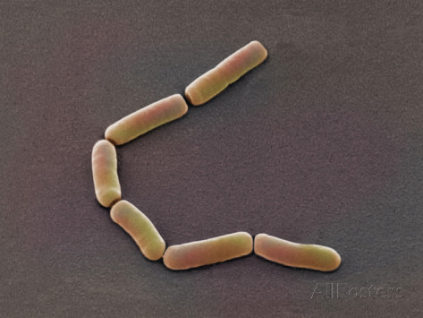
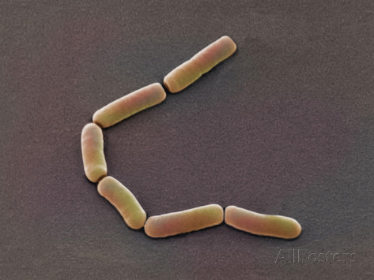
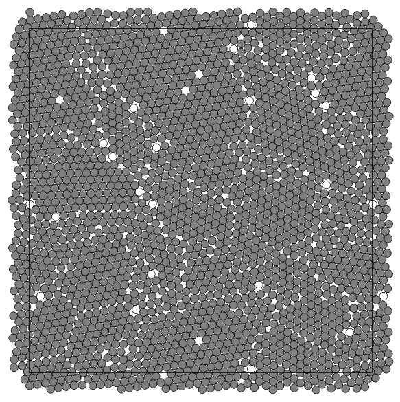
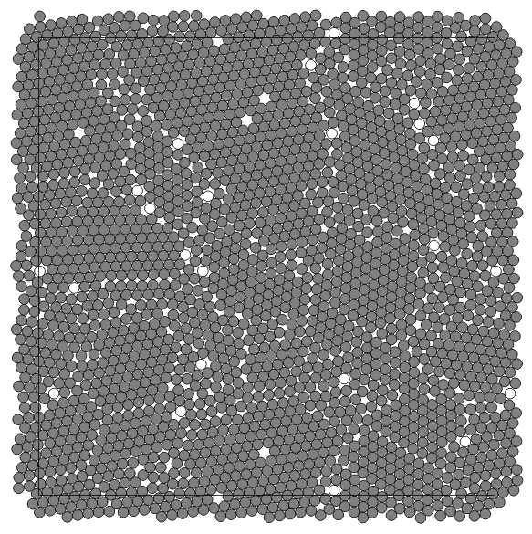
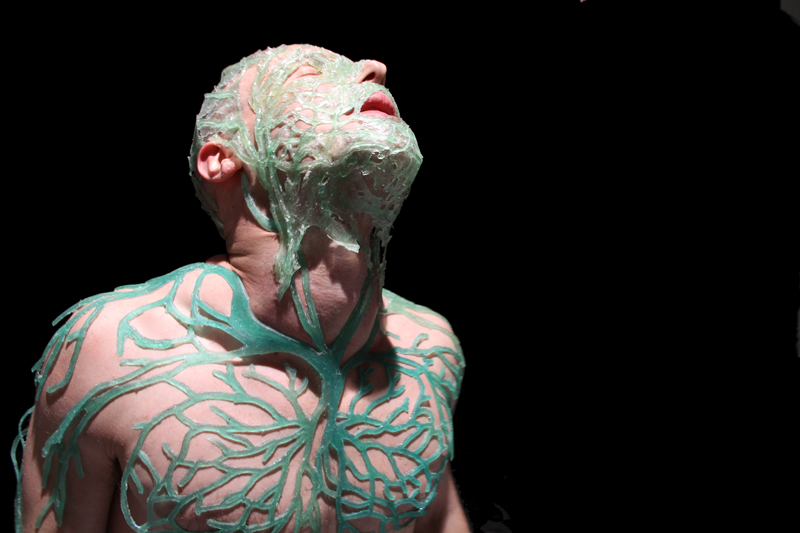
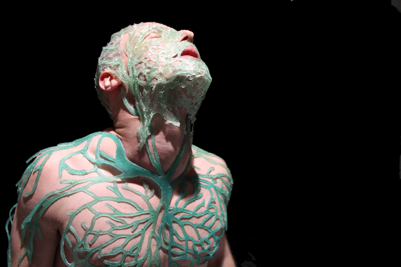

Biohack Academy documentation
Living systems
What is it? — Systems and tools to partially influence the growth process with room for unexpected outcome. A balance between completely random and fully controlled. What does it do? – Research ways to use biological material that shape the design and skeletton of typography. This in which the shape isn't determined by me but by the material itself. Why? – My graduation is about living systems that alter the skeleton or design of a letter and evolving it into type. In my work I'm always looking/searching for rules and systems that can generate dynamic results. Our alphabet is an ancient system and we are conditioned with it. We are used to it, aware of it, and it is a familiar set of symbols for communication.In my project I'm trying to let the biological material engineer this system of fixed rules.
I see this as a undoing project, it will be a journey for the development of several experiments.
What can be improved?
- Variation in shape
- Variation and diversity technique
- Pragmatic documentation
- Focus (I do many things together)
- Prediction of the material
I'm doing a lot of things at the same time right now, I can't concentrate long on a specific experiment. I am reaching the way how I can deal with the shaping new materials.
Questions I should ask?
- What are the rules?
- What am I doing finally with the form?
- Should our Latin alphabet be the basic, the starting point or the purpose?
- Can living material create a new alphabet(, with it's own shape)?
- Do I really want to create a new alphabet?
Expiriments
Growing grid
For me is a grid a set of rules with different dynamic outcomes. For this experiment, I tried to infiltrate grid in petri dishes, Where bacteria and fungi may be able to grow through it. The initial idea is that bacteria can grow towards each other in the grid of the Petri dish.
Grid - Experiment 1, 3d printed 3d grid.
After 3d printing I discovered that I can buy it for 1 euro. Indeed, it is almost exactly the same as bottom plates for ironing beads.
The next step was sterilization of the plates.
Ironing beads bottom plate (picture left): Autoclave 20 min
3d printed grid (picture right) : In a bowl with ethanol for 20 min


For this experiment I used 200 ml mrs agar

Poured into 15 Petri dishes of 9.5 cm

!!
In alle andere schalen begonnen na een paar dagen kleine dingen te groeien. Behalve in het grid, die had ik namelijk schoongemaakt met ethanol en niet laten drogen.
Grid - Experiment 2, plate from 1 euro and drying in the sterilehood.
20 min in Ethanol for sterilization and the plate did I dry in a sterile environment. After that I used plates with Nutrient Agar.


This grid is made up in a circle, so the form has limitations.


Grid - Experiment 3

Because of the air bubble in 'experiment 2' I generate a thin layer of agar, where the grid bottom plate can stick to


Interpretation cover
For this experiment I created a set of tools.
For my first experiment I tried to test different kind of ways. It is a paradox because it seems like a solid form. Ik hoop dat de uitkomst niet een op een is.


The last two petri dishes did I placed with the lid open in the incubator. It is a theory and I do not know if it will work.
Interaction
In this experiment, I combine two types of bacteria that interact to each other. (not complete)
Bacillus mycoides
Bacillus mycoides Flügge, a Gram-positive, non-motile soil bacterium assigned to Bacillus cereus group, grows on agar as chains of cells linked end to end, forming radial filaments curving clock- or counter-clockwise (SIN or DX morphotypes). The molecular mechanism causing asymmetric curving is not known: our working hypothesis considers regulation of filamentous growth as the prerequisite for these morphotypes.
BMC Microbiol. Colony shape as a genetic trait in the pattern-forming Bacillus mycoides. 2002; 2: 33.
Properties
BioHazard Level: 1
Growth Temperature: 30oC (also grow at 20oC)
Gram Stain: Bacillus mycoides is Gram stain positive
Industrial uses or economic implications: Bacillus mycoides is nearing the market as a biological pesticide.
Miscellaneous: Bacillus mycoides produces a carbohydrate capsule and forms distinctive rhizoid colonies when grown on solid media.
What are rhizoid colonies?
Janthinobacterium lividum
Janthinobacterium lividum Janthinobacterium lividum is an aerobic, gram-negative, soil-dwelling bacterium that has a distinctive dark-violet (almost black) color. This color is due to a compound called violacein, which is produced when glycerol is metabolized as a carbon source. Violacein has anti-bacterial, anti-viral, and anti-fungal properties. Its anti-fungal properties are of particular interest since J. lividum is found on the skin of certain amphibians, including the red-backed salamander (Plethodon cinereus), where it prevents infection by the devastating chytrid fungus (Batrachochytrium dendrobatidis).[2]
Massilia aurea and Janthinobacterium lividum are both bacteria that can be found in soils. In 2006, Massilia aura was isolated from drinking water in Seville, Spain. It is a relatively novel type of bacteria, so little has been published about it. Massilia aurea are gram-negative bacteria that form yellow, circular colonies1. Janthinobacterium lividm are gram negative bacteria that form purple-black, rod-shaped colonies. In addition to being found in the soil, they can also exist in spoiled milk. Janthinobacterium lividum can, in rare cases, cause septicemia in humans2, which is a life-threatening reaction to bacterial infections in the body. The death rate for some septicemia infections can be as high as 50%3. However, this bacteria also creates the pigment violacein, which causes its purple color. Violacein is toxic to bacteria, viruses, protozoa, and fungi. Janthinobacterium lividum also creates three other antibiotics that are effective against both gram negative and gram positive bacteria, and it is resistant to ß-lactam antibiotics2.
Bonan, N. TA: Pedersen, A. Comparison of Bacteria from Transect 5 with Other
Sequenced Bacterial DNA from Transect 5 Lab Section: D01. July 21, 2014


Now, I inoculate first the Janthinobacterium lividum.
Mycelium
In sommige experimenten is te zien dat Mycelium naar de bovenkant van een petrischaal groeit. In dit experiment wil ik proberen of ik deksel kan voorzien van een vochtige vorm met voedingstoffen. De vorm is gedefineerd, maar mijn theroie is dat het materiaal toch niet helemaal zal doen wat ik wil.
Ik dacht in het begin dat Mycelium naar vocht zou toe groeien. Na een gesprek met Pieter bleek echter dat dit niet logisch is. Ze groeien meestal naar plekken toe waar eten te vinden is. En ze groeien op hout. Een vochtige plek zou dus niet werken. Wat misschien zou kunnen werken is een voedingsbodem in de deksel bouwen. Waar voeding is zit waar ze graag naar toe groeien.
Purpose: Can Mycelium grow in selected and unpredictable directions?
Material: Mycelium, Malt agar, Petri dishes, Plexiglas, Fabric
Kan ik dus een deksel ontwerpen waar Mycelium graag naar toe groeit? Als eerste moet ik er voor zorgen dat ik een 'blije' en gezonde colonie mycelium heb groeien. Dit is niet helemaal gelukt de eerste keer. (zie figuur x). Het is besmet met bacterien, waardoor de Mycelium niet meer goed kan groeien denk ik. Ook is de beroemde broodschimmel in een schaaltje beland.
Bron: http://www.shroomery.org/forums/showflat.php/Number/10024598
Cultivation media
The first step was to cultivation media where they can grow in.
Malt Agar (MA) — Suitable for growing yeast and fungi.
Compound Amount Unit
Malt extract 30.0 g
Agar 20 g
Demi water up to 1000 mL
Set pH ~5.5
This recipe has be found on the Biohack Academy Syllabus, from the Waag Society.
Mycelium
The Mycelium compoments did I get from Tony Garcia.

Pets
Bacteria and fungi from Amsterdam canal water
The obvious R.
One rule in my experiments was: "don't draw". However, the lines at the bottom are not drawn by me.
Iodine clock reaction
The iodine clock reaction (STd3) is a classical chemical clock demonstration experiment to display chemical kinetics in action; it was discovered by Hans Heinrich Landolt in 1886.
intelligent systems
Materiaal: 'Slime Mold' Physarum polycephalum
Doel: Punten verbinden en onverwachtse routes creëren.
Stap 1:
Levende kolonie bemachtigen.
Zes contacten gelegd.
Carolina en knippen en plakken
Stap 3: Ontwerp blokkade plexiglas of (Acetate)
Stap 4: Experimenteren
Stap 5: Letter vormen bestaand en nieuw
Physarum polycephalum is een zogenaamde plasmoidale slijmzwam. Het bestaat uit een geel plasmodium dat zich kan verplaatsen en daarbij een glanzend spoor achterlaat. Het voedt zich met micro-organismen.
Incubator
My plan is to combinate my incubator with an livestream webcam.


Microscope
 Spirulina (Arthrospira)
Spirulina (Arthrospira)


Practicum
Other things
Skeletter


 


 



 
